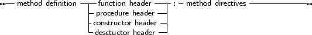
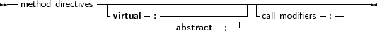

The declaration of a method is much like a normal function or procedure declaration, with some additional specifiers, as can be seen from the following diagram, which is part of the object declaration:
_________________________________________________________________________________________________________methods


___________________________________________________________________
from the point of view of declarations, Method definitions are normal function or procedure declarations. Contrary to TP and Delphi, fields can be declared after methods in the same block, i.e. the following will generate an error when compiling with Delphi or Turbo Pascal, but not with FPC:
Type
MyObj = Object Procedure Doit; Field : Longint; end; |